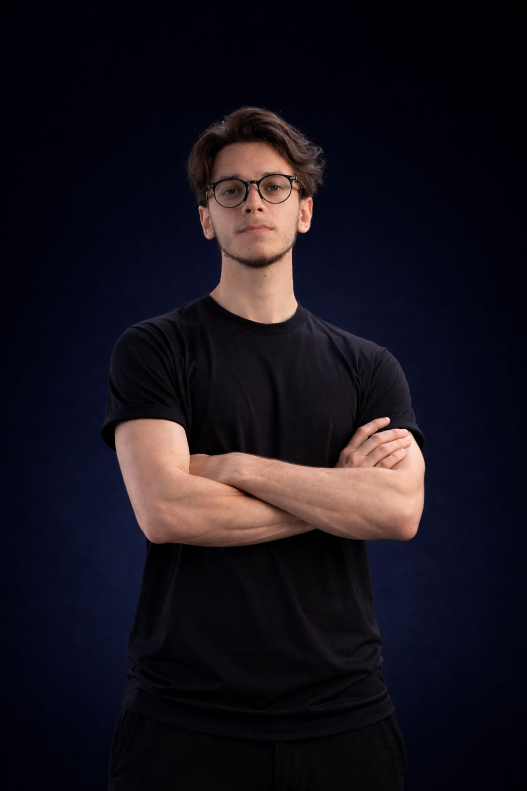

Olá! Sou estudante de Análise e Desenvolvimento de Sistemas e estou focado em aprender programação, lógica e desenvolvimento de software. Estou no início da minha jornada na área de tecnologia e busco constantemente evoluir minhas habilidades em Python, desenvolvimento web e resolução de problemas.
Meu objetivo é conquistar uma oportunidade de estágio na área de tecnologia para aplicar meus conhecimentos e continuar aprendendo cada vez mais.
Se quiser me conhecer melhor e acompanhar minha evolução e conhecer os projetos que estou desenvolvendo durante minha jornada na tecnologia, clique em um dos botões abaixo.
LinkedIn Instagram WhatsApp